성장 격차
체격 성숙도

10–15세 전문 주니어골든에이지
멘탈평가와 멘토링, 피지컬 기능평가와 강화를 바이오밴딩 기반 성장관리로 연결합니다.
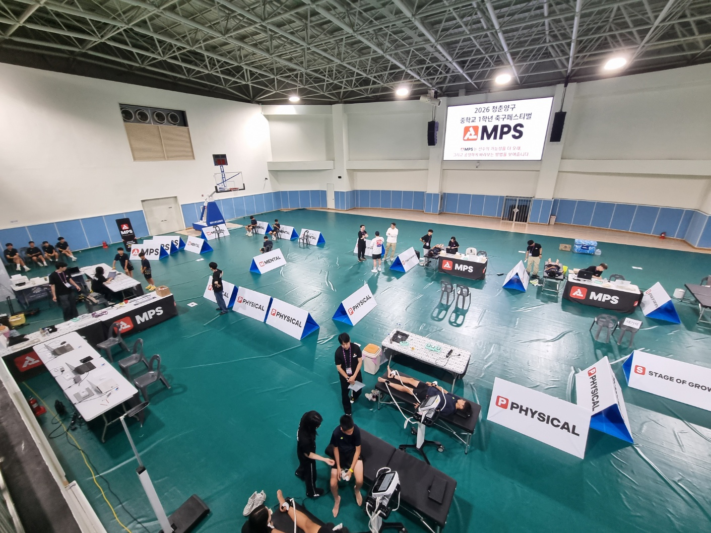
중학교 진입기에는 몸의 성장 차이, 통증, 비교의 부담이 함께 커질 수 있습니다.
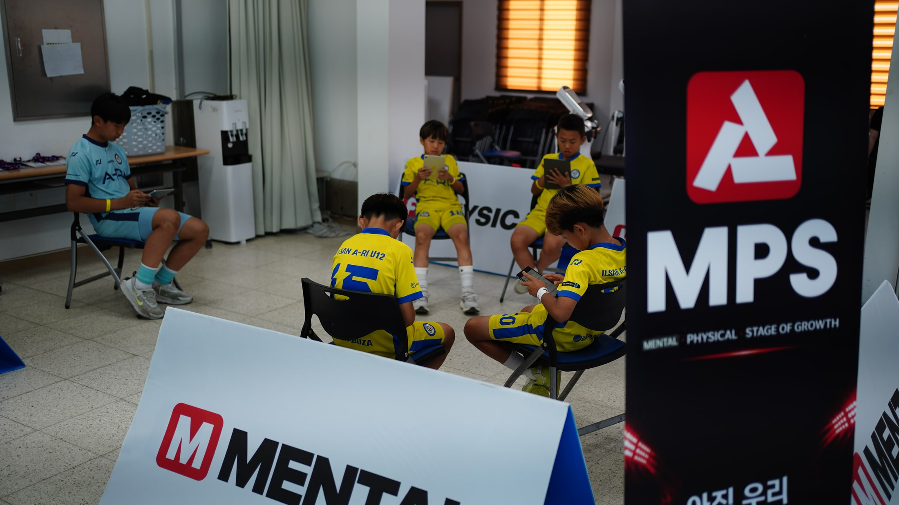
체격 성숙도
통증 비교 압박
자신감 훈련 공백
재미 소속감 약화
선수 수와 1년 관리비로 계산했습니다. 활동 아동까지 확장하면 1.2조 원 시나리오입니다.
2만 명 × 연360만
5만 명 × 연360만
50만 명 × 연240만
고객이 비용을 낼 이유는, 아이에게 지금 필요한 도움을 구체적으로 알기 위해서입니다.
| 무슨 고민이 있나요? | 부모의 질문 | 지도자의 질문 |
|---|---|---|
| 성장 | 왜 우리 아이만 작을까요? | 더 기다려도 될까요? |
| 몸 상태 | 아픈데 계속 뛰어도 될까요? | 훈련을 늘릴까요, 줄일까요? |
| 마음 | 실수하면 왜 위축될까요? | 어떻게 격려해야 할까요? |
생년월일로 묶던 선수를 신체의 성숙도로도 묶어보는 접근입니다. MPS는 이 관점을 리포트에 적용합니다.
스포츠심리평가와 인지검사로 강점과 과제를 파악하고, 성장단계를 함께 보며 멘탈멘토링으로 연결합니다.
멘탈평가 후, 매일 또는 격일의 다이어리를 바탕으로 프로선수 출신 멘토가 멘탈멘토링을 진행합니다.
더 뛰게 할지 쉬게 할지 고민될 때, 성장단계와 몸의 기능을 함께 보고 관리 방향을 정합니다.
바이오밴딩 + 기능평가를 기반으로 점프와 근력, 균형을 해석하고 개별 운동 계획을 세웁니다.
나이, 뼈의 성숙도, 성장단계를 함께 보여줍니다. 지금의 체격을 이해하는 기준부터 바꿉니다.
성장종합데이터 950건 / 5개월
월평균 190건 축적
팀과 선수의 접점
325명 설문
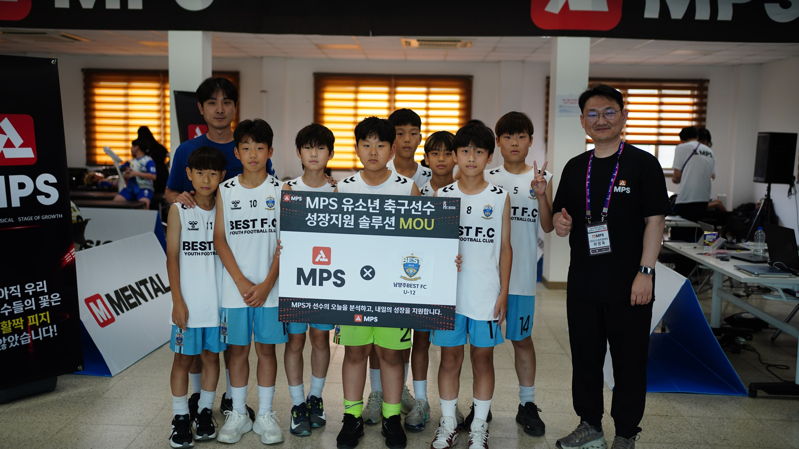
의료, 스포츠, 심리, 기술 인력이 측정 결과를 실제 서비스로 연결합니다.
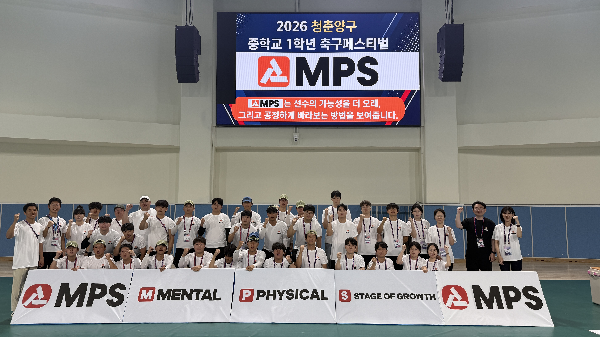
20년 임상 운영 경험
축구행정 스포츠마케팅
프로선수 출신 멘토
AI 웹솔루션 개발
부모가 월 관리비를 내고, 선수가 정기적으로 도움받는 운영 모델을 검증합니다.
한의원 월 400만 원, 피지컬센터 월 200만 원에 기관당 광고대행 월 100만 원을 더합니다.
| 기관당 월 요금 | 인증 한의원 | 피지컬센터 |
|---|---|---|
| 플랫폼 구독 | 100만 원 | 100만 원 |
| 인증운영 / 운영지원 | 100만 원 | 100만 원 |
| 소모품대행 | 200만 원 | — |
| 기본 합계 | 400만 원 | 200만 원 |
| 광고대행 (별도) | 100만 원 | 100만 원 |
| 광고대행 포함 | 500만 원 | 300만 원 |
부모의 관리비, 팀 계약, 제휴기관 서비스 매출을 더한 2031년 308.312억 원 시나리오입니다.
| 매출 /비용 | 만원 |
|---|---|
| 회원120명 ×40만 | 4,800 |
| 측정40명 ×12만 /팀계약 | 480 /125 |
| 인건비 /임차 /기타 | 600 /600 /500 |
| 변동비10% | 540.5 |
| 운영 잉여 본사배부 전 | 3,164.5 |
월매출 5,405만 연매출 6.486억
바이오밴딩 기반으로 멘탈평가 후 멘탈멘토링, 기능평가 후 컨디셔닝을 연결합니다.
| 비교 기준 | PLCO공개 서비스 | SPORTS MPS10–15세 성장기 선수 통합관리 |
|---|---|---|
| 대상 | 유소년 및 엘리트 팀 | 10–15세 성장기 선수 |
| 피지컬 | 피지컬 측정, 리포트, 훈련 | 바이오밴딩 + 기능평가 |
| 멘탈 | 공개 서비스 범위 참고 | 멘탈바이오밴딩 + 스포츠심리평가/인지검사 |
| 후속 서비스 | 앱, 웹, 오프라인 짐 | 의료기관 × 스튜디오 × 멘탈멘토링성장단계 기반 측정 → 강화 → 재측정 |
영국의 바이오밴딩과 일본의 측정 서비스에서 배우고, 국내 성장기 선수에게 맞춥니다.
비슷한 성숙도의 선수들이
함께 뛰는 바이오밴딩 사례
기초체력을 측정하고 분석해
개별 과제를 설명
측정 결과를 바탕으로 훈련하고
기록으로 변화를 확인
운영과 연구
기준과 언어
수요와 재현성
파트너 계약
일본 ARROWZ는 측정, 훈련, 기록을 연결합니다. MPS는 여기에 성장단계 기반 통합 지원을 설계합니다.
스포츠독
필드 테스트
훈련
MPS
전문가 강화
다음 계획
선수 곁에서 몸과 마음의 변화를 살피고, 필요한 도움을 연결하겠습니다.
본사 × 의료기관 × 스튜디오
× 멘탈멘토링
전문인력, 제품, 서울 센터를 갖춰 반복 가능한 운영 모델을 증명하겠습니다.
검증 기준 실행 조직
앱 리포트 강화 서비스
직영 검증 제휴 해외교류
의료와 교육, 축구 현장에서 쌓은 경험으로 선수의 성장관리를 사업으로 연결합니다.

해온한의원 본원 대표 한의사
3대째 한의사, 스포츠한의학 20년
동국대와 가천대 한의학과 겸임교수
메디스트림 강의, 헬릭스미스 자문
FIFA 축구의학 코스 수료
스포츠한의학회 공인 팀닥터
서울 대동초 축구부 팀닥터
J리그 팀 등 한일 교류와 대회 의무지원
슛포러브 프로그램 촬영 지원
스포츠 심리상담사 1급
축구선수 학부모, 초등 축구부 학부모대표
클럽과 학교, 프로 산하와 골든에이지
선수 육성 과정을 직접 경험
대표의 임상 경험과 현장 네트워크에, 스포츠와 심리, 개발 역량을 더했습니다.
CEO 대표임상 팀닥터 사업 운영
 CMO 현장 / 스포츠
CMO 현장 / 스포츠축구행정 스포츠마케팅
 CX 현장 / 멘토링
CX 현장 / 멘토링선수 출신 멘탈 고객 경험
AI 웹솔루션 개발
현장 운영
교육 멘토링 운영 평가 운영
웹 모바일 기획 리포트 설계
한의학박사 전문의
초음파 한방내과 팀닥터
서울에서 운영을 증명하고, 전국의 부모와 팀이 이용하는 성장관리 플랫폼으로 나아갑니다.
부모가 이해하고,
전문가가 돕고,
선수가 다시 찾는 서비스.
쌓아온 팀 네트워크를 측정 행사, 리포트 해석, 관리 프로그램의 접점으로 연결하겠습니다.
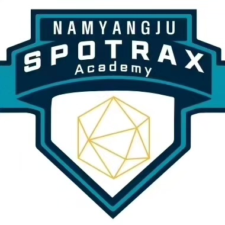
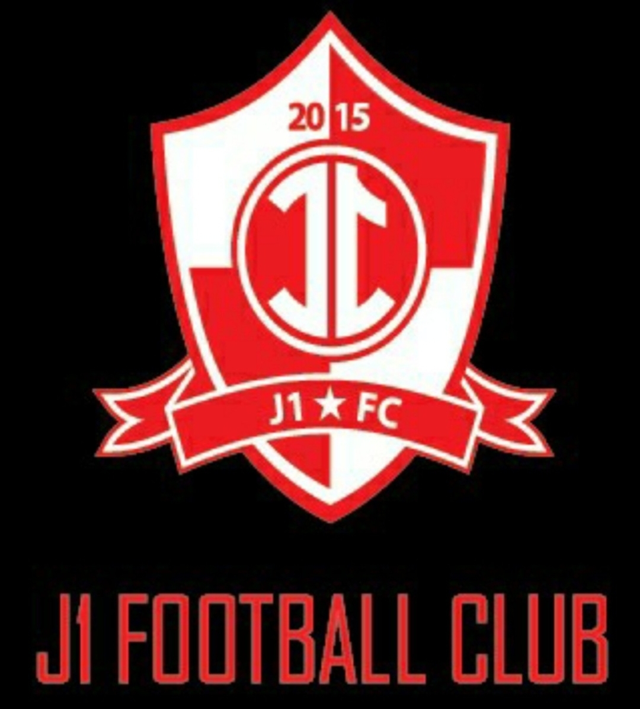
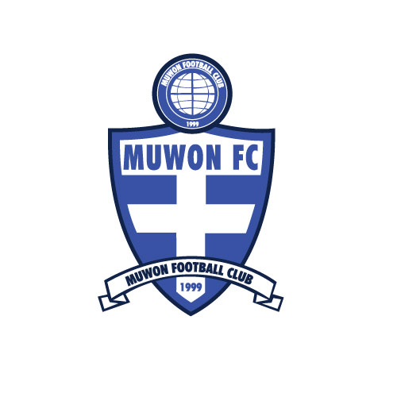
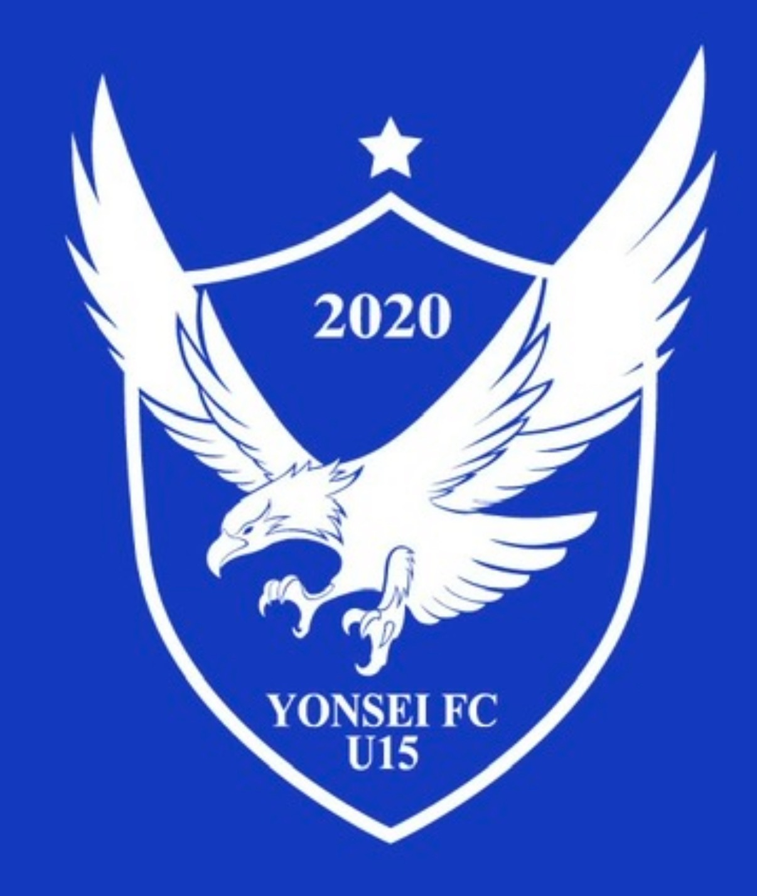
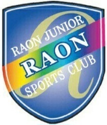
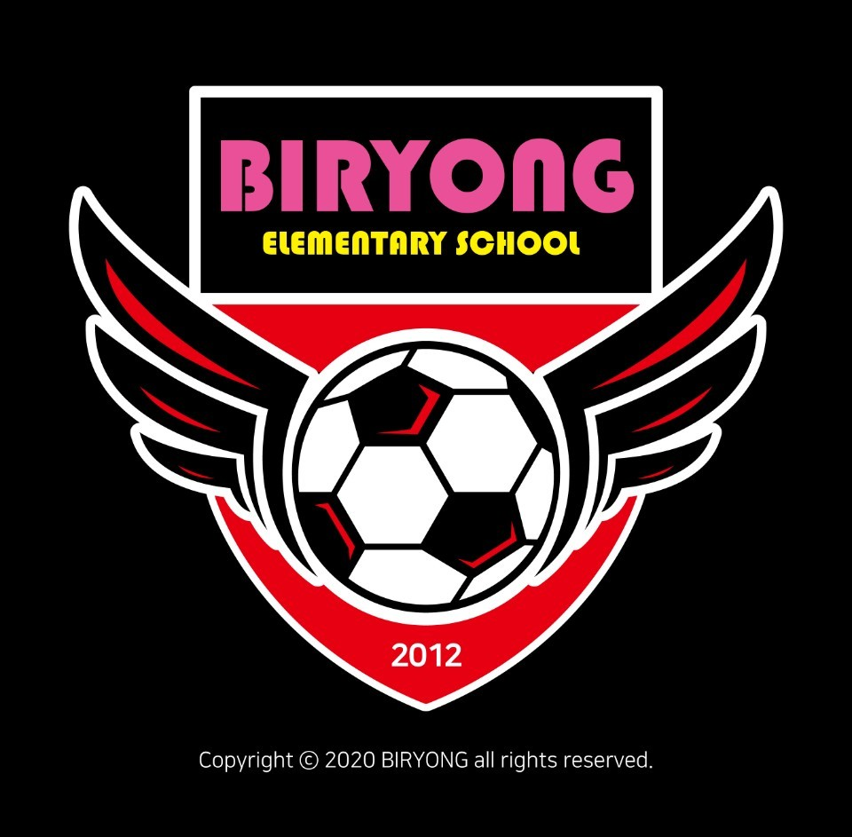
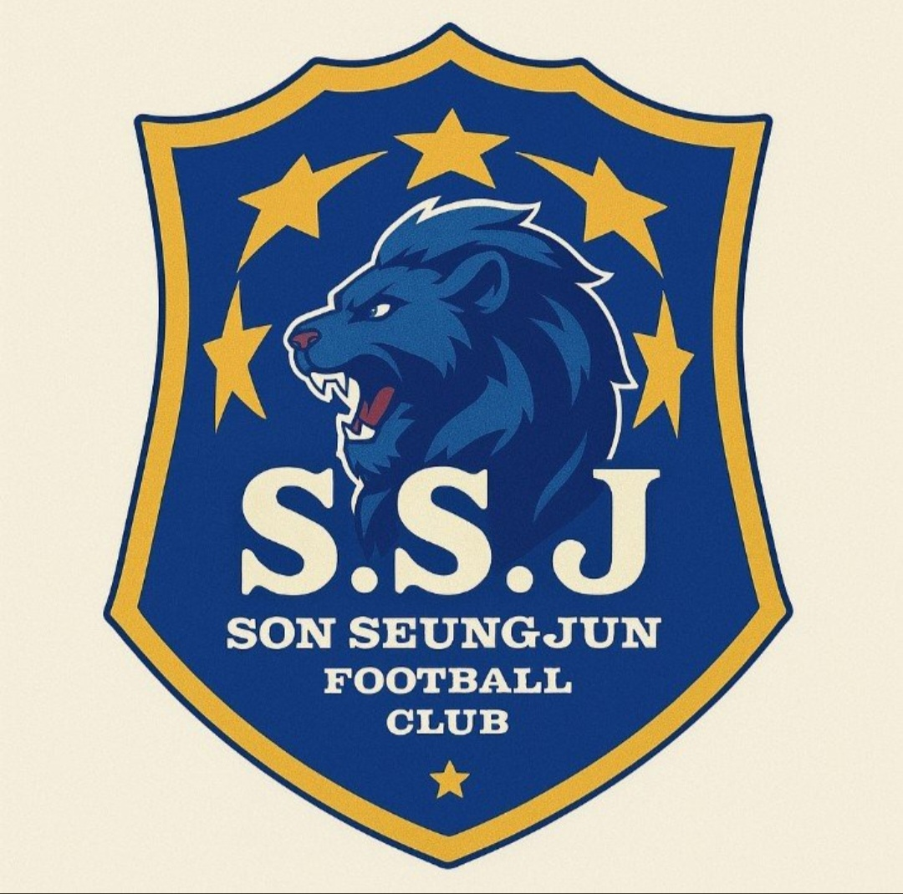
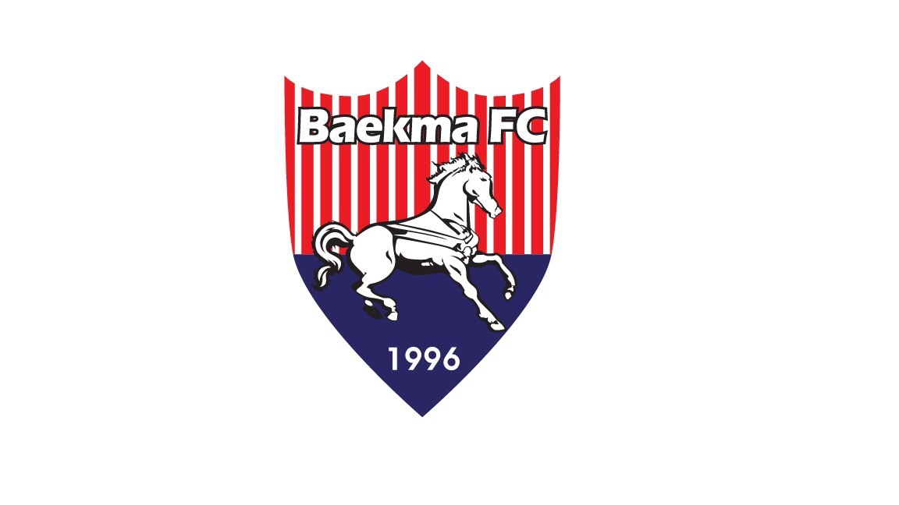
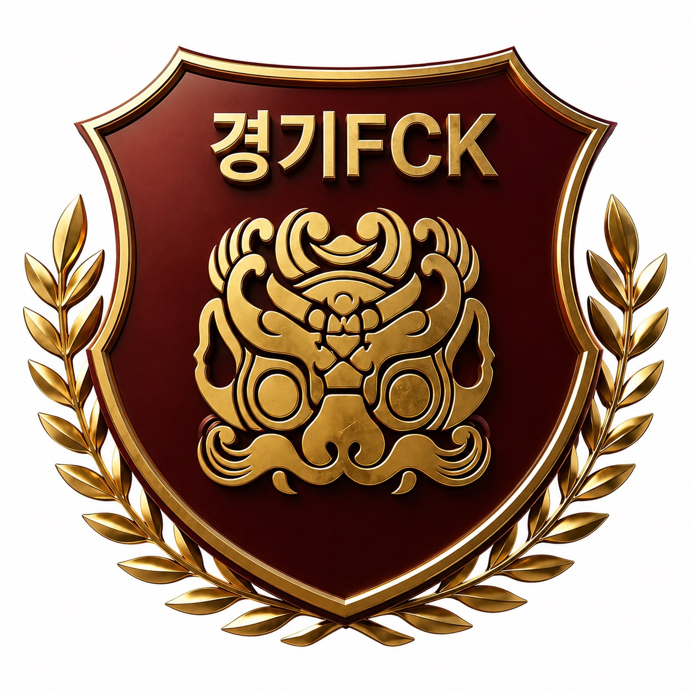
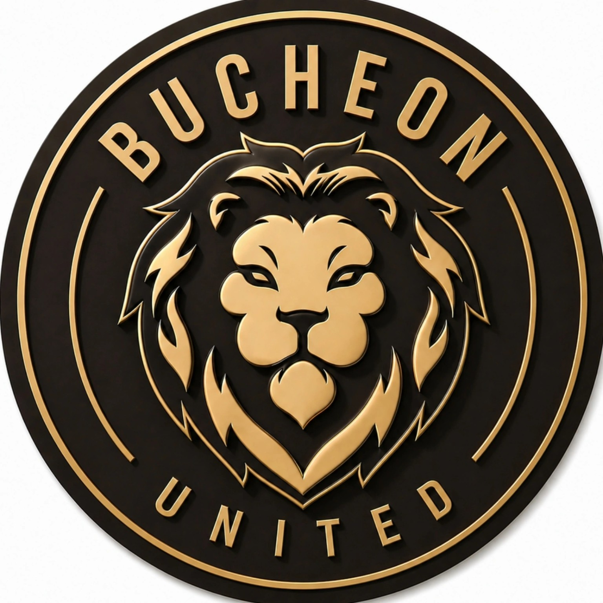
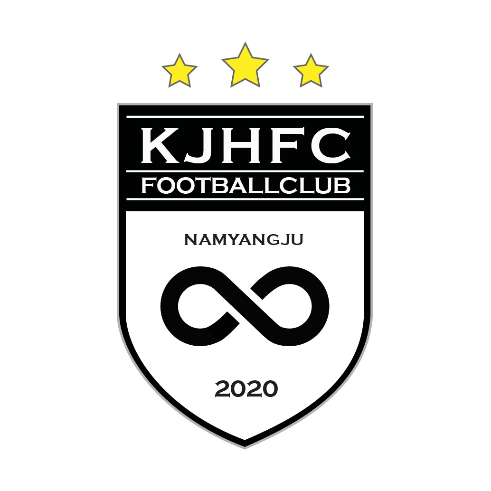
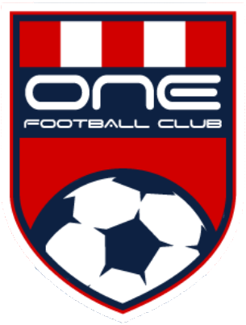
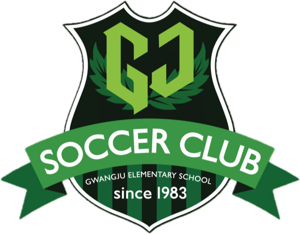
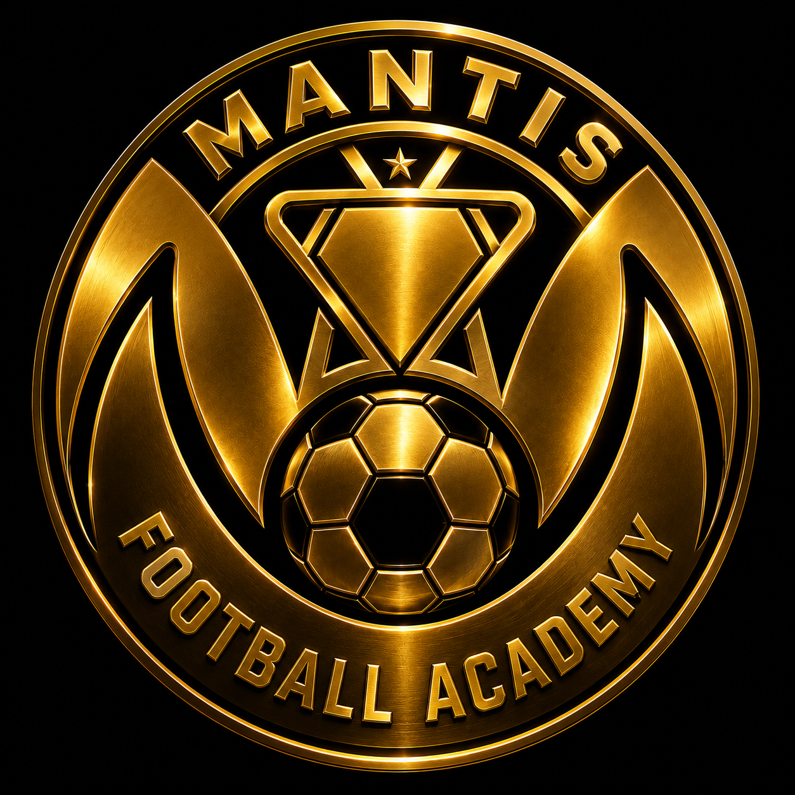
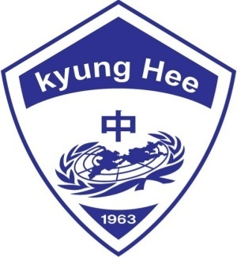
측정하고, 설명하고, 다음 도움을 연결해 온 현장입니다.
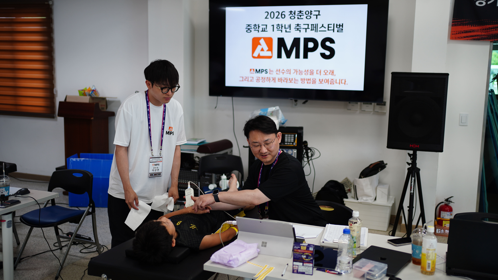
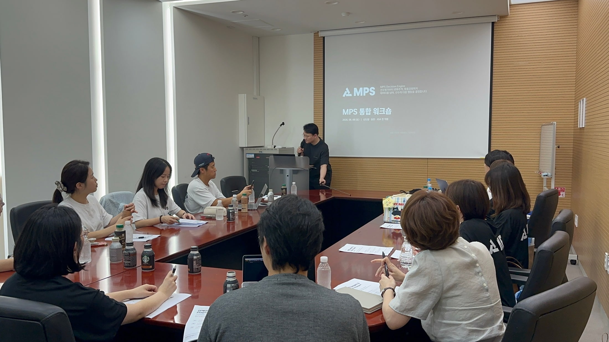